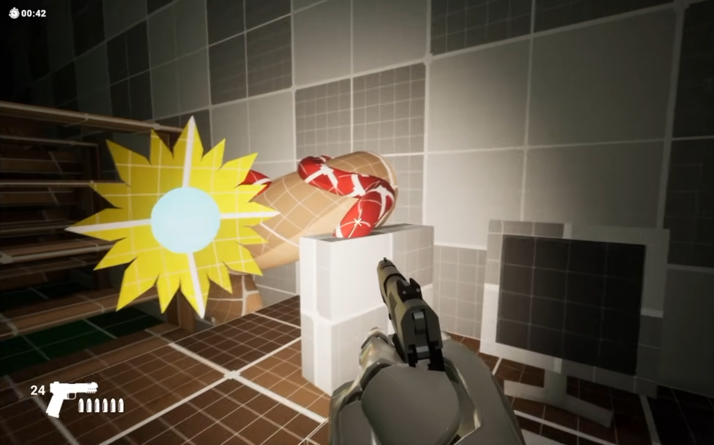
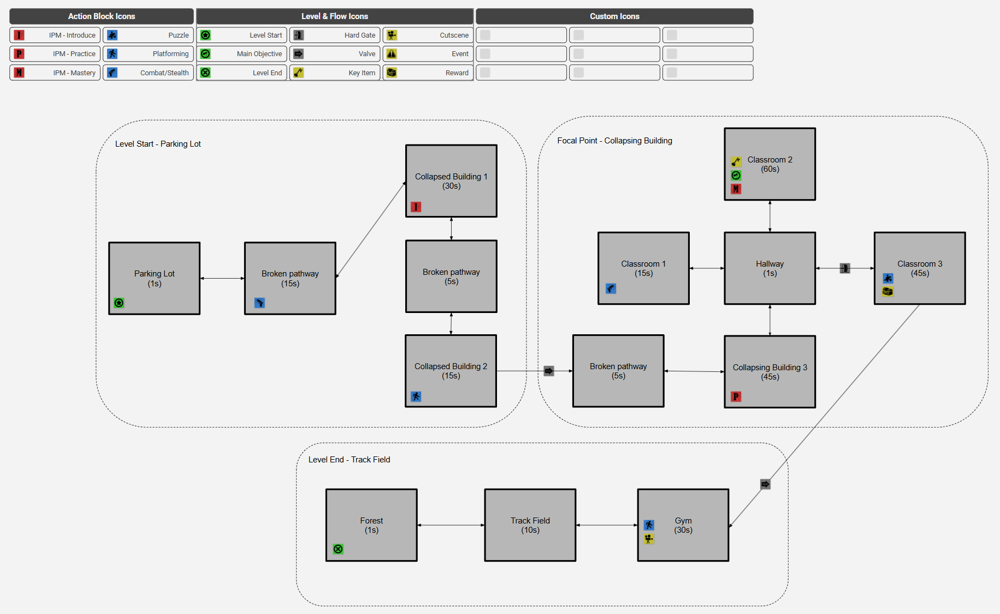
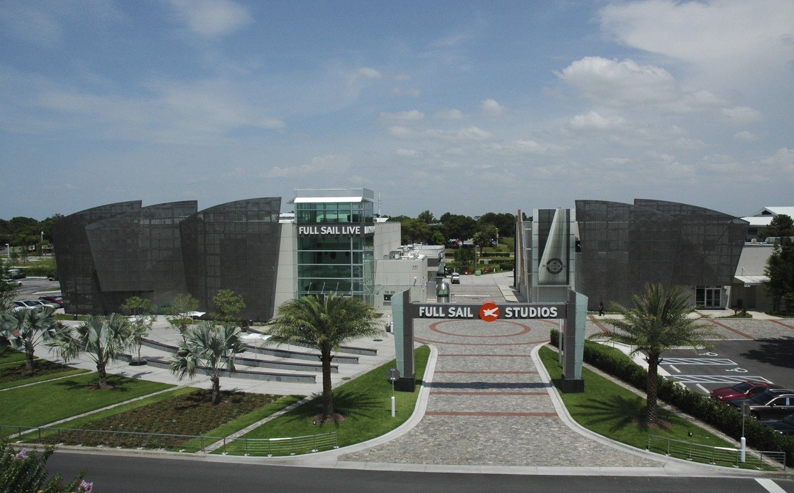
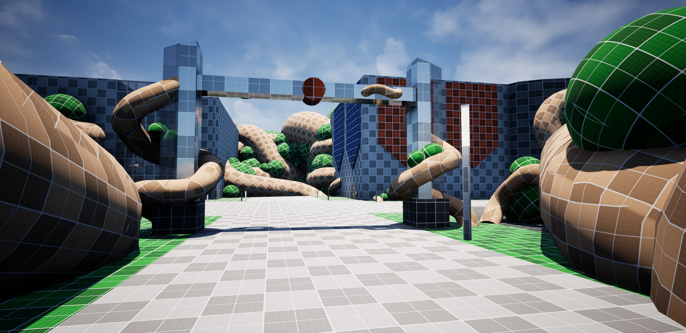
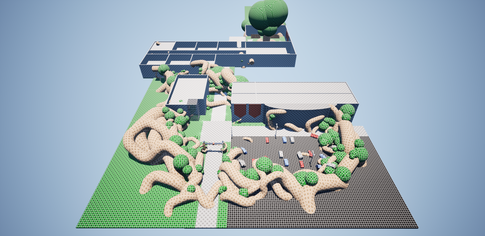
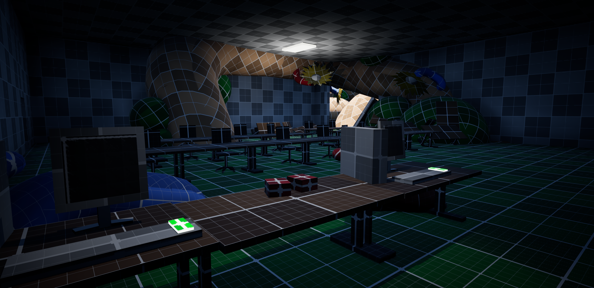

Scraps
You play as Rook, a scavenger in a ruined post-Fall wasteland, hired by the rich Bastions through shadowy handlers to hunt for valuables and secrets worth selling as “scraps.” Explore linear stretches of the waste, fight the undead that roam the ruins, and survive long enough to turn your finds into profit.

Responsibilities
- Designed and developed an original level inspired by the Full Sail University campus
- Created all pre-production documentation, including flowcharts, bubble diagrams, level maps, and a pitch deck
- Designed player progression, objectives, encounters, and overall gameplay flow
- Built the complete level blockout in Unreal Engine 5
- Developed and integrated a custom Blueprint gameplay mechanic
- Implemented level lighting and environmental storytelling elements
- Managed project version control and milestone submissions
- Conducted playtesting and iterated on level design based on feedback
Design Process


Flow Chart
I began by mapping the player's journey through the space and identifying key interactions, objectives, and transitions.
IRL Inspiration
As a student at Full Sail University, I wanted to build a level based on a location that has had a direct impact on my educational journey. Recreating part of the campus gave the project a personal connection while also providing a strong foundation for environmental design decisions.

Challenges
The largest challenge was starting with a completely empty space and creating a level that felt purposeful and cohesive. Without existing layouts or gameplay spaces to build upon, I needed to establish clear objectives, create engaging progression, and ensure the environment effectively supported the gameplay mechanic.


What I Learned
Through this project, I strengthened my understanding of player guidance, level pacing, Blueprint implementation, and iterative design. The experience reinforced the importance of planning tools such as flowcharts and bubble diagrams before entering production.